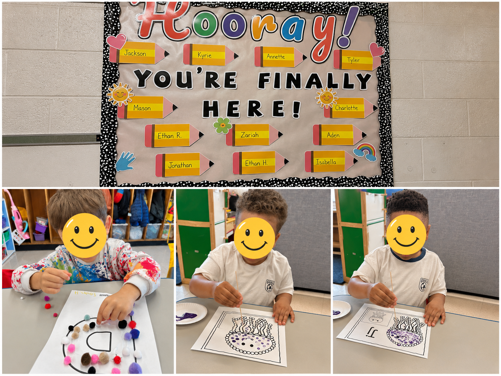
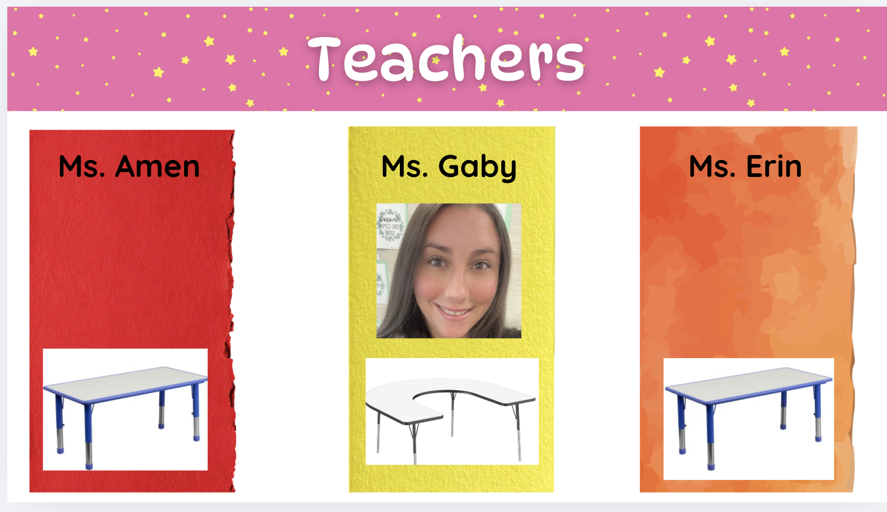

Teaching Portfolio
Welcome to my professional teaching portfolio. This portfolio highlights my teaching experience, classroom practices, lesson planning, professional growth, and commitment to creating inclusive learning environments for all students.
NYS Certified
Childhood Education (Grades 1–6) & Students With Disabilities (All Grades)
Instructional Experience
Preschool, elementary, ICT, ABA & self-contained settings
Collaborative Educator
Families, classroom staff & related service providers
Growth Mindset
Pursuing graduate study in ENL
About Me
My name is Gabriella Sparacio, and I am a New York State certified teacher in Childhood Education and Students with Disabilities. I recently completed my first year as a Preschool Special Education Teacher in a 12:1:2 self-contained classroom at Variety Child Learning Center.
My experiences across preschool, elementary, special education, ABA, student teaching, substitute teaching, and classroom support roles have strengthened my passion for creating structured, supportive, and engaging learning environments where all students can grow academically, socially, emotionally, and behaviorally.
Education
- SUNY Old Westbury — Bachelor’s Degree in Special Education & Childhood Education, 2024
- Nassau Community College — Associate’s Degree in Liberal Arts, 2009
Initial Certifications
- Childhood Education (Grades 1–6)
- Students With Disabilities (All Grades), Initial Certificate
Award
- SUNY Old Westbury — Academic Achievement
Professional Strengths
- Classroom Management
- Differentiated Instruction
- Parent Communication
- Positive Student Rapport
- Collaboration
My Philosophy
Relationships First
Students learn best when they feel safe, respected, and understood. I prioritize building trusting relationships so students feel confident taking risks and participating in learning.
Individualized Instruction
Every student learns differently. I use visuals, hands-on materials, small groups, scaffolding, accommodations, and data to meet individual needs while maintaining high expectations.
Collaboration
Families, colleagues, teaching assistants, and related service providers are essential partners. Students make the greatest progress when adults communicate and work toward shared goals.
Teaching Experience
Preschool Special Education Teacher — 12:1:2 Self-Contained Classroom
Instruction & IEP Implementation
- Develop and implement individualized instruction aligned with students’ IEP goals across academic, social-emotional, communication, and behavioral domains.
- Design developmentally appropriate lessons targeting school readiness, early literacy, early numeracy, communication, play, and social-emotional skills.
- Facilitate whole-group, small-group, and individualized learning activities to support diverse learning needs.
Differentiation & Student Support
- Provide differentiated instruction in a 12:1:2 special education classroom for preschool-aged students with disabilities.
- Use visual supports, hands-on materials, modeling, prompting, and individualized scaffolds to increase access and participation.
- Create a structured, nurturing, and inclusive classroom environment that promotes independence, self-regulation, and positive peer interactions.
Behavior & Classroom Management
- Implement behavior support plans, positive reinforcement systems, and classroom management strategies to promote engagement and student success.
- Use classroom routines, visual schedules, token boards, First-Then supports, and consistent expectations to support transitions and reduce frustration.
- Foster positive student rapport through patience, encouragement, and relationship-based classroom management.
Collaboration & Progress Monitoring
- Collaborate with speech-language pathologists, occupational therapists, physical therapists, social workers, and families to support student growth.
- Collect and analyze student data to monitor IEP progress and guide instructional planning.
- Participate in CSE meetings, annual reviews, and multidisciplinary team meetings to develop and review IEPs.
Applied Behavior Analysis (ABA) Behavior Technician
Individualized ABA Support
- Provided 1:1 individualized ABA therapy for students of varying ages and abilities.
- Implemented interventions including discrete trial training, modeling, PECS, and individualized treatment plans.
- Supported communication, daily living skills, social skills, and goal acquisition through structured sessions.
Data & Behavior Intervention
- Maintained thorough records of student progress to inform instruction and therapy sessions.
- Provided positive reinforcement for desired behaviors and supported self-management techniques.
- Assisted with crisis intervention and de-escalation when needed.
Permanent Substitute Teacher
Instruction Across Grade Levels
- Delivered lessons across various subjects and grade levels in the absence of the classroom teacher.
- Followed and implemented lesson plans while maintaining classroom routines and expectations.
- Gained familiarity with district curriculum and resources including UFLI, Heggerty, i-Ready, and Fundations.
Classroom Support
- Provided small-group reading support using Fundations and UFLI.
- Promoted positive student behavior and effective classroom management.
- Ensured student safety, engagement, and continuity of learning throughout the school day.
Student Teaching Experience
1st Grade General Education
- Designed whole-class and small-group lessons across subject areas based on student needs, learning styles, and interests.
- Infused Next Generation Learning Standards into daily instruction.
- Fostered an organized and supportive learning environment through behavior management, SEL, and relationship-building.
3rd Grade ICT Special Education
- Collaborated with a cooperating teacher to plan differentiated instruction for students with IEPs in an inclusive classroom setting.
- Utilized co-teaching models to increase curricular accessibility for students with and without disabilities.
- Supported accommodations, modifications, and behavioral intervention strategies to encourage self-regulation.
Classroom Showcase
A Few Moments From My Classroom
These photos highlight hands-on learning, fine motor development, classroom creativity, and student engagement. Student faces have been covered for privacy.

Lesson Highlight: The Very Hungry Caterpillar Sequencing
This observation lesson focused on story sequencing, early literacy, participation, visual supports, and differentiated small-group instruction. Students identified key events from The Very Hungry Caterpillar, participated in an interactive “Feed the Caterpillar” activity, and completed sequencing work with individualized support.
View Lesson PlanWeekly Planning Highlight: Plant & Flower Growth
This weekly plan demonstrates integrated instruction across literacy, math, science, fine motor, sensory exploration, mindfulness, structured play, and social-emotional learning.
View Weekly Lesson PlanReflection & Professional Growth
Reflecting on My First Year of Teaching
My first year of teaching has been one of the most rewarding and transformative experiences of my career. Working in a 12:1:2 preschool special education classroom challenged me to grow not only as an educator, but also as a leader, collaborator, and advocate for my students. Every day presented opportunities to reflect, adapt my instruction, strengthen relationships, and celebrate student growth—no matter how big or small.
Leadership Within the Classroom
I learned that successful classrooms are built on strong teamwork. I worked closely with my teaching assistants to establish clear expectations, divide responsibilities, and maintain a positive classroom culture.
I believe open, honest, and respectful communication is essential for building trust among classroom staff. By regularly discussing student progress, sharing observations, and problem-solving together, we created a collaborative environment where everyone felt valued and supported.
Consistency Across Learning Environments
One of the greatest lessons I learned was the importance of consistency. Students thrive when expectations remain the same regardless of who is providing instruction.
Our team worked intentionally to implement the same visual supports, behavior expectations, reinforcement systems, prompting strategies, and instructional routines throughout the school day. This consistency helped students become more independent, confident, and successful during transitions and across academic settings.
Collaboration & Continuous Growth
Throughout the year, I strengthened my collaboration with related service providers, administrators, and families to ensure students received consistent support across settings.
I also embraced feedback as an opportunity for growth. Reflecting on my practice helped me strengthen my classroom management, instructional planning, differentiation, and confidence as an educator. As I continue pursuing graduate studies in Teaching English to Speakers of Other Languages (ENL), I look forward to expanding my knowledge and continuing to grow professionally.
Purposeful Small-Group Instruction
I intentionally organized my small groups using heterogeneous grouping rather than grouping students solely by academic ability. Each group included no more than four students and was thoughtfully balanced with a variety of communication skills, learning styles, academic strengths, and peer models.
Each classroom table was color coded to create structure, predictability, and consistency across academic settings. Slides were presented for each rotation so students knew which group they belonged to, where to go, what activity to complete, and what to expect next.
This approach encouraged peer collaboration, language development, social interaction, and cooperative learning while still allowing me to differentiate instruction and provide individualized support based on each student's needs and IEP goals.

Resume & Credentials
Below are my professional documents, including my full resume, lesson plans, and application materials.
Download ResumeObservation Lesson PlanWeekly Lesson PlanRecommendations
Throughout my preparation and first year of teaching, I have been fortunate to work alongside educators who have supported my growth and development. Their reflections speak to my commitment, passion, and dedication to students.
Allison Shirreffs-Leek
1st Grade Teacher | Farmingdale School District
Kathryn Feibusch
Elementary Special Education Teacher | Farmingdale School District
Contact
Thank you for taking the time to view my teaching portfolio. I look forward to connecting with you.
Email: GabriellaSparacio@yahoo.com
Phone: (516) 592-7271